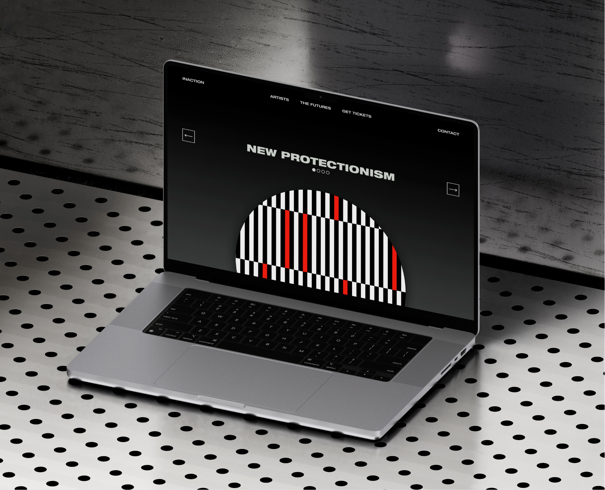
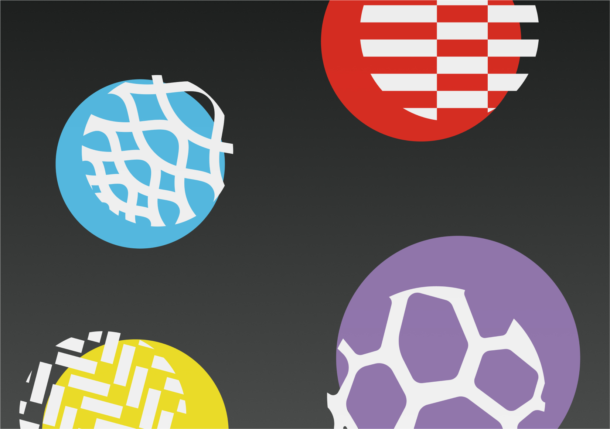
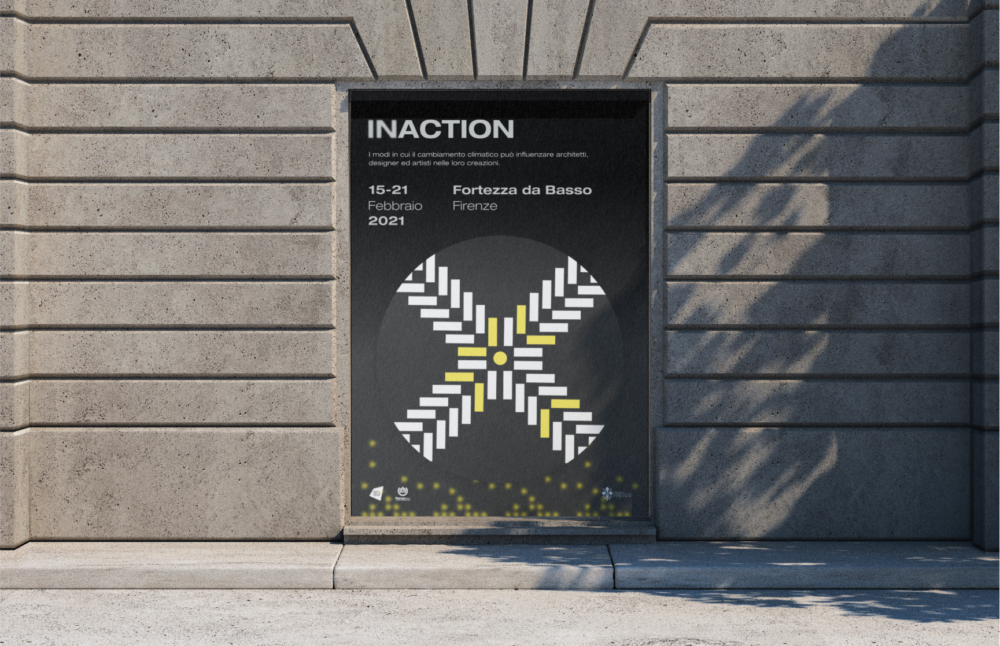
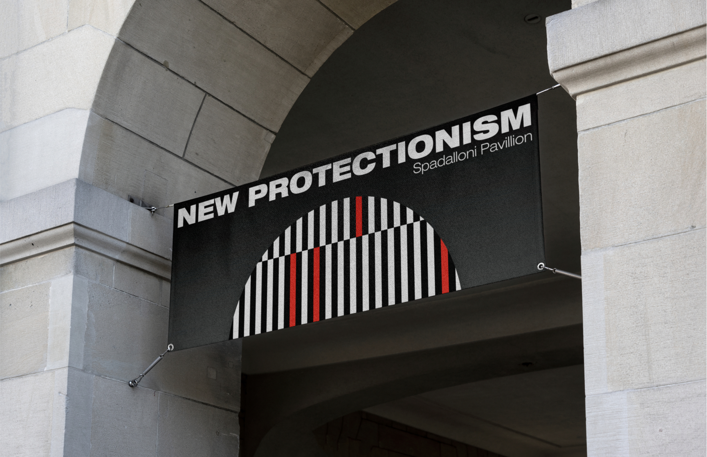
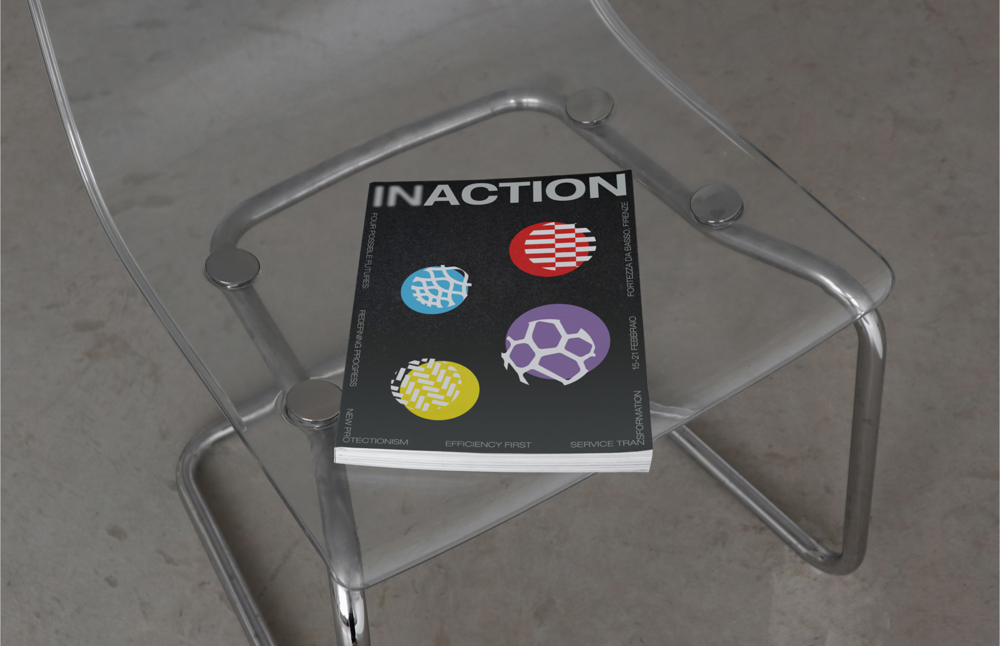

INACTION
05/07
WEB & VISUAL IDENTITY


LIFE IN PLASTIC
07/07
Inaction is an exhibition that challenges artists, designers, and architects to imagine their practice in four speculative 2040 scenarios, where climate change has been confronted through different paths. Inspired by the <2°C Futures report by Forum for the Future, it blurs the line between utopia and dystopia, inviting visitors to navigate possible futures.
Year
2023
Role
Concept Development
Visual Identity
Web design & Prototype
Tools used
Figma
Adobe
Context
Personal Project
Visual identity: four possible futures
The logo’s blurred “in” invites dual readings, “action” or “inaction,” reflecting our choices or lack thereof in addressing global warming. Helvetica Extended, shifting from light to black, represents contrasting, evolving futures. Colours, shapes, and patterns each symbolise one of four possible futures, while the grey-to-black gradient conveys uncertainty and the discomfort of facing an unknown path ahead.

Applications
The logo’s blurred “in” invites dual readings, “action” or “inaction,” reflecting our choices or lack thereof in addressing global warming. Helvetica Extended, shifting from light to black, represents contrasting, evolving futures. Colours, shapes, and patterns each symbolise one of four possible futures, while the grey-to-black gradient conveys uncertainty and the discomfort of facing an unknown path ahead.



Visual identity: four possible futures
Through its website, the exhibition extends beyond the physical space, prompting reflection on the choices we make today and their lasting impact.